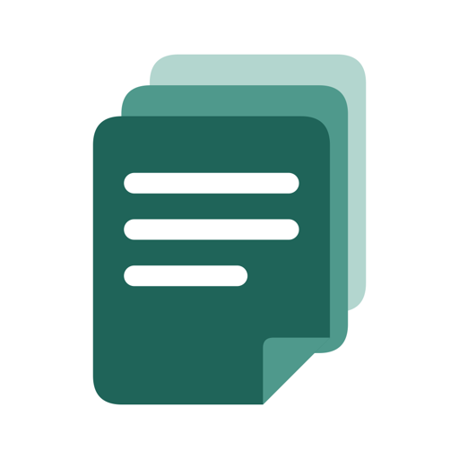

Notezi · 노트지개인정보처리방침
Planetspoon은 Notezi(노트지)를 이용할 때 어떤 정보가 처리되는지,
그리고 그 정보를 어떻게 관리할 수 있는지 안내합니다.
먼저, 핵심만 알려드릴게요.
- 회원가입 없이 사용하며, 노트와 첨부 사진은 이용자의 기기에 저장됩니다.
- 노트 내용을 운영자의 서버로 전송하지 않으며, 자체 클라우드 동기화를 제공하지 않습니다.
- 광고, 이용 행태 분석 및 추적용 SDK를 사용하지 않습니다.
- 사진 첨부, 리마인더, 백업과 공유는 이용자가 선택해 사용하는 기능입니다.
01처리하는 정보와 이용 목적
Notezi는 별도 계정을 만들거나 이름, 이메일, 전화번호를 입력하지 않고 사용할 수 있습니다. 다음 정보는 노트 작성·검색·정리, 알림 제공 및 이용 환경 설정을 위해 기기 내부에서 처리됩니다.
- 노트와 첨부 사진
- 제목, 본문, 체크리스트, 서식, 직접 선택한 사진, 다른 앱에서 공유받아 저장한 텍스트와 링크
- 노트 정리 정보
- 노트북 이름·구조, 노트의 색상·고정·보관 상태, 생성·수정 시각, 휴지통 상태·이동 시각
- 리마인더
- 연결된 노트, 알림 시각, 반복 주기와 요일. 기기의 운영체제가 로컬 알림을 예약하고 표시합니다.
- 앱 설정과 백업 상태
- 언어, 테마, 글자 크기, 노트 정렬 방식, 마지막 백업 시각 및 백업 후 변경 여부
이 정보는 운영자가 수집하거나 열람하는 서버 데이터가 아닙니다. Notezi는 노트·사진을 운영자의 서버에 업로드하거나 광고·분석 사업자에게 자동 전송하지 않습니다.
02백업, 내보내기와 외부 공유
이용자가 백업을 실행하면 노트·사진·노트북·설정 등이 포함된 데이터베이스 파일을 기기에 만들고 운영체제의 공유 화면을 엽니다. 백업에는 휴지통에 남아 있는 노트도 포함됩니다. 복원은 이용자가 선택한 백업 파일을 읽어 기기 내 데이터를 교체합니다.
노트를 텍스트, HTML 또는 PDF로 내보내거나 파일을 공유하면, 선택한 앱이나 저장 서비스가 해당 내용을 전달받습니다. 클라우드 드라이브·메신저 등 외부 서비스에서의 보관 및 삭제에는 해당 서비스의 개인정보처리방침이 적용됩니다.
다른 앱에서 Notezi로 공유한 텍스트와 링크는 새 노트로 저장됩니다. 외부 링크를 열거나 외부 주소의 콘텐츠를 불러오면 해당 서비스로 접속 정보가 전달될 수 있으며, 해당 서비스의 정책이 적용됩니다.
운영자는 기기에 저장된 노트를 직접 제3자에게 제공하거나 판매하지 않으며, 해당 정보를 처리하도록 외부 사업자에게 위탁하지 않습니다. 기기 운영체제의 백업·복원 기능은 이용자의 기기 설정과 해당 제공자의 정책에 따릅니다.
03사진과 알림에 대한 접근 권한
- 사진 선택
- 사진 첨부를 실행하면 운영체제의 사진 선택 기능을 사용합니다. 필요한 경우 사진 접근 권한을 요청하며, 선택한 사진을 노트에 저장합니다. 사진 보관함 전체를 운영자에게 전송하지 않습니다.
- 알림 및 알람
- 리마인더를 설정할 때 알림 권한을 요청합니다. Android에서는 기기 설정에 따라 정확한 알람 허용이 필요할 수 있습니다. 노트 제목이 알림 화면이나 잠금 화면에 표시될 수 있습니다.
- 파일 선택
- 백업 복원 시 이용자가 선택한 파일을 읽고, 백업·내보내기 시 파일 생성 및 공유 기능을 사용합니다.
사진·알림 권한은 기기의 설정에서 변경하거나 철회할 수 있습니다. 권한을 허용하지 않아도 기본 텍스트 노트 작성은 가능하지만, 해당 권한이 필요한 기능은 제한됩니다. 사진 권한을 철회해도 이미 노트에 첨부한 사진은 자동 삭제되지 않습니다.
Notezi는 연락처, 위치, 마이크에 접근하지 않으며 앱 안에서 카메라 촬영 기능을 제공하지 않습니다.
04정보의 보관과 삭제
- 노트와 휴지통: 노트는 이용자가 삭제할 때까지 보관합니다. 삭제한 노트는 먼저 휴지통으로 이동하며, 자동으로 영구 삭제되지 않습니다. 휴지통에서 영구 삭제하거나 휴지통을 비우면 현재 노트 데이터베이스에서 제거됩니다.
- 리마인더: 앱에서 알림을 해제할 수 있고, 기기 설정에서 알림 표시를 차단할 수 있습니다. 노트를 휴지통으로 옮기면 해당 노트의 예약 알림을 취소합니다.
- 복원 전 안전 백업: 백업 복원 직전에 기존 데이터의 사본을 앱 저장 공간에 남깁니다. 이 사본은 다음 복원 시 교체되며, 현재 노트를 삭제해도 함께 삭제되지 않습니다.
- 임시 파일: 백업·가져오기·내보내기 과정에서 앱 저장 공간과 캐시에 사본이 남을 수 있습니다. 현재 노트의 삭제는 이러한 사본의 삭제를 의미하지 않습니다.
- 기기 내 전체 데이터: 안전 백업과 임시 파일을 포함한 앱 데이터를 제거하려면 운영체제에서 앱과 해당 데이터를 삭제해 주세요. 데이터를 유지하는 앱 정리·오프로드 기능은 데이터 삭제와 다릅니다.
- 외부 사본: 직접 저장한 백업·내보내기 파일, 공유한 사본 및 운영체제 백업은 저장 위치나 해당 서비스에서 별도로 삭제해야 합니다.
운영자는 기기에 보관된 노트에 원격으로 접근하거나 대신 삭제할 수 없습니다. 앱의 삭제 기능을 이용하거나 기기 내 앱 데이터를 제거해 주세요.
05정보를 보호하는 방법
노트와 설정은 운영체제가 관리하는 앱 전용 저장 공간에 보관합니다. 기기 잠금을 사용하고 운영체제를 최신 상태로 유지해 주세요. 잠금 화면에서 노트 제목이 보이지 않게 하려면 운영체제의 알림 미리보기 설정을 조정할 수 있습니다.
백업 데이터베이스와 내보내기 파일에는 별도의 암호를 설정하지 않습니다. 파일을 읽을 수 있는 사람은 노트와 사진도 볼 수 있으므로, 신뢰할 수 있는 위치에 보관하고 필요한 대상에게만 공유해 주세요.
06이 웹사이트를 이용할 때
이 개인정보처리방침 웹사이트에는 광고, 방문자 분석 스크립트, 추적 쿠키 및 외부 폰트를 사용하지 않습니다.
웹사이트는 GitHub Pages에서 제공됩니다. 페이지에 접속하면 GitHub가 서비스 제공과 보안을 위해 IP 주소 등 접속 정보를 처리할 수 있습니다. 자세한 내용은 GitHub 개인정보처리방침에서 확인할 수 있습니다. 이러한 웹 접속 정보는 앱에 저장된 노트와 별개입니다.
07문의와 이용자의 권리 행사
개인정보 관련 질문이나 열람·정정·삭제·처리 정지 요청은 아래 이메일로 보내주세요. 기기 내 정보는 앱에서 직접 확인·수정·삭제할 수 있으며, 운영자가 보유한 문의 정보에 대해서는 이메일로 요청할 수 있습니다.
운영자 및 개인정보 문의 담당: Planetspoon
planetspoon.support@gmail.com이메일 문의 시 발신 이메일 주소, 문의 내용 및 직접 첨부한 자료를 답변과 문제 해결 목적으로 처리합니다. 필요한 내용만 보내주시고, 노트에 포함된 민감한 정보는 제외해 주세요. 문의 정보는 처리 목적이 달성되면 지체 없이 삭제하며, 관계 법령에 따라 보관할 의무가 있는 경우 해당 기간 동안 보관합니다.
문의 수신에는 Google의 Gmail을 사용하므로 이메일은 Google의 서비스에서 처리·보관됩니다. 서비스의 데이터 처리에 관한 내용은 Google 개인정보처리방침을 확인해 주세요.
08개인정보처리방침 변경
앱 기능이나 정보 처리 방식이 변경되면 이 페이지에 변경된 방침과 시행일을 게시합니다. 새로운 개인정보 수집이나 동의가 필요한 변경이 있는 경우, 적용 전에 필요한 안내와 동의 절차를 진행합니다.
이 방침은 부터 시행합니다.